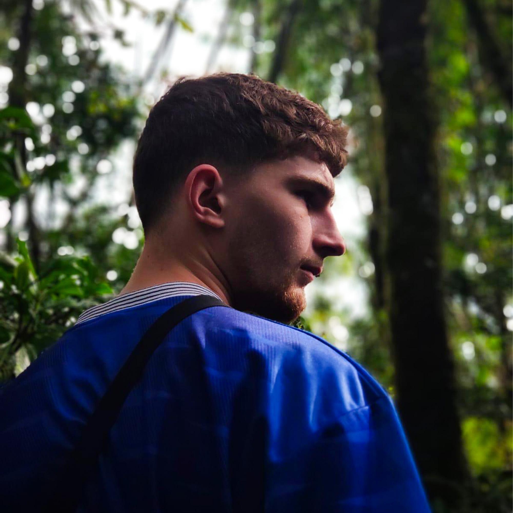
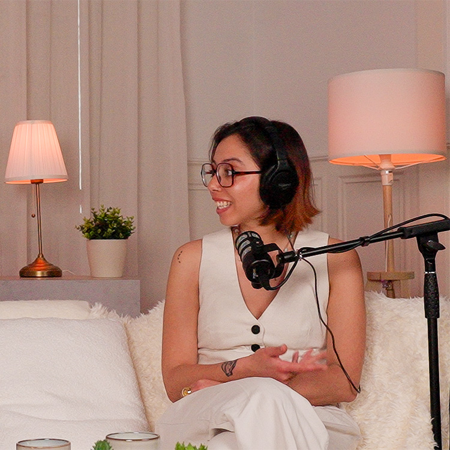
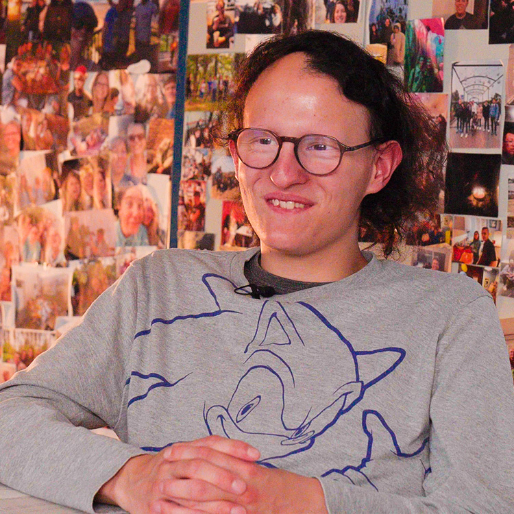
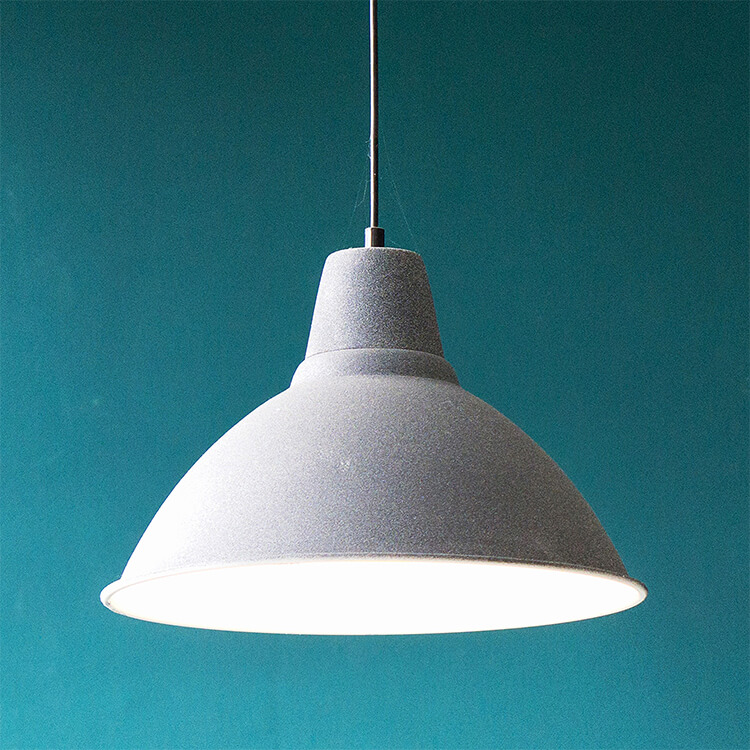

Paul De Villers,
étudiant à Kedge,
M2 Arts & Creatives Industries

Mon parcours.
Mon terrain de jeu, c'est l'espace entre l'idée et sa réalisation.
Je construis mon parcours à la croisée de la création, de la technique et de la stratégie. À côté de mes études, j’ai toujours développé des projets concrets : audiovisuel, musique, design, web, branding, entrepreneuriat culturel.
Ce qui me motive, c’est de comprendre vite, d’apprendre vite et de relier des univers différents.
J’aime penser un projet dans sa globalité : l’idée, la forme, la diffusion, et les enjeux économiques qui l’entourent.
Ce site est une extension de mon CV : un espace pour raconter une trajectoire hybride, faite de curiosité, d’expérimentation et d’envie de construire.
Expériences Créatives.
{kind=link}

Podcast Santé Mentale
Conception, réalisation et montage de podcasts consacrés à la santé mentale,
en collaboration avec des professionnels de la psychologie.
Projet financé via la CVEC, en partenariat avec la Faculté de Pharmacie de Paris,
combinant enjeux culturels, institutionnels et éditoriaux.
{kind=link}

Documentaire à l’Arche
Réalisation d’un documentaire immersif au sein de l’Arche, suivant le quotidien de Damien,
une personne en situation de handicap mental.
Projet pensé dans une perspective de diffusion médiatique (TV / plateformes),
à la croisée du documentaire social et du récit humain.

Projets web & visibilité digitale
Accompagnement de professionnels dans la création de leur présence digitale.
Conception de sites internet, optimisation de fiches Google, production de contenus visuels
(photos, édition), et amélioration du référencement.

Fédération Française de Football & Nike
Participation à des projets de création visuelle pour la Fédération Française de Football,
en collaboration avec d’autres créateurs et avec Nike.
Intervention sur l’univers graphique et créatif autour des rassemblements
de l’équipe de France en 2025.
{kind=link}

Production musicale
Création et diffusion d’instrumentales, publiées sur YouTube et vendues
à des artistes de la scène rap et R&B parisienne et internationale.
Gestion autonome de la production, de la distribution et relations artistes.

Refonte d’une marque de vin familiale
Projet de repositionnement d’une marque de vin familiale, avec une ambition
de modernisation de son identité et de son récit.
Travail sur la direction artistique, le design, le storytelling et la stratégie de marque.
Et plus encore...
Découvrez d'autres projets et réalisations